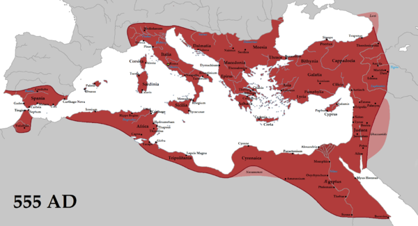
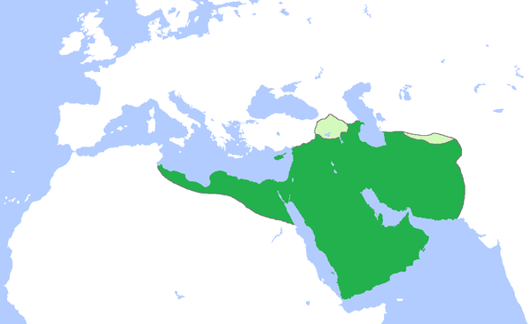
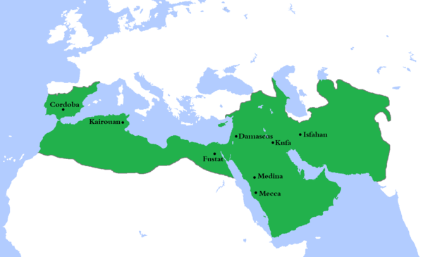
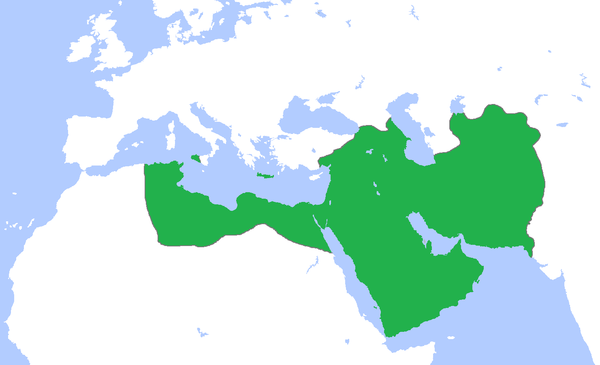
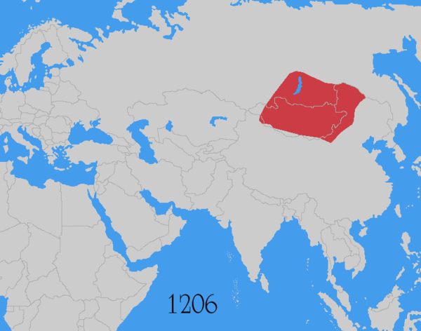
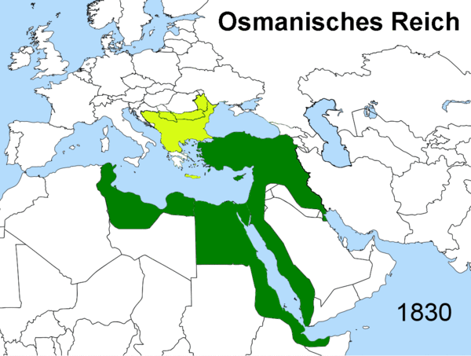

前几天发生在巴黎的连环恐怖袭击，大伙儿想必都听说了。网上（包括墙内）已经有很多相关的新闻报道，所以俺就不再发《每周转载》了。
伊斯兰国（IS）已经承认自己是主谋。关于这个奇葩的政权，俺在今年初的博文《伊斯兰教极端主义溯源》中已有提及（写那篇的时候，巴黎刚刚发生过《查理画报》惨案）。
最近十多年来，伊斯兰极端分子已经制造了许多震惊世界的恐怖袭击（最有名的当推“911事件”）。很多读者可能会思考——为啥伊斯兰教会冒出这么多恐怖分子，其数量和危害远远高于其它宗教。今天这篇博文，尝试从“伊斯兰教本身”来回答这个问题？
俺一直避免在博客上写宗教话题。因为写这类话题，总是免不了要冒犯某些读者（尤其是宗教信徒）。
今天这篇也不例外。如果你是宗教信徒，本文可能会令你感到不爽；如果你正好是伊斯兰教信徒，本文会令你极度不爽。因此，你可以不看这篇博文。如果你非要看，并且受到精神伤害，那俺也只能说声“抱歉”，仅此而已。
如果你是伊斯兰极端分子，企图杀俺泄愤，欢迎来找 :) 俺本人是匿名，没那么容易找到 :)
（在前几个月的一篇博文《“对抗专制、捍卫自由”的 N 种技术力量》，俺强调了匿名术对于捍卫言论自由的重要意义）
本文想要聊的是：为啥伊斯兰教相比其它一些大型宗教会有如此多如此大的差异（奇葩之处）？为啥伊斯兰教对信徒的控制力如此之强？
俺尝试从历史、政治、心理学、文化等几个角度来分析上述问题的根源。
为了避免引发歧义，先把本文提及的某些词汇，界定一下。
伊斯兰教
本文所说的“伊斯兰教”包含“逊尼派”、“什叶派”、“伊巴德派”。但【不包含】“德鲁兹派（Druze）”、“阿赫迈底亚派（Ahmadiyya）”、“巴比派（Bábism）”。
因为后面这几个教派的教义，已经跟伊斯兰教原本的教义有显著的差异，更像是新的宗教。
基督教
本文所说的“基督教”是“天主教、东正教、基督教新教”的总称。
穆罕默德
本文所说的“穆罕默德”指的是伊斯兰教的创始人。
伊斯兰教能够发展成为世界第二大宗教（按信徒人数），有一个很重要的原因在于：它诞生的时机恰到好处（简直可以说是“狗屎运”）。
下面分几个方面来聊。
首先来看宗教背景。
穆罕默德生卒年月是“公元571年~632年”。这个时间段，基督教已经广为流传（公元380年，基督教确立为罗马帝国的国教）。
因此，穆罕默德在年轻时期的经商过程中，有足够多的机会接触基督教，了解其教义，从而作为自己创建新宗教的基础。（凭空创造一个宗教总是很难的，而在现成的基础上创建，就容易多了）。至于犹太教——犹太人是经商的好手，穆罕默德在经商的过程中，多半也会接触到犹太人以及犹太教。
另外，穆罕默德有可能还接触过琐罗亚斯德教。关于这点，俺不是很确定。因为穆罕默德年轻时期的历史文献很少，很难考证出这点。但是俺觉得有这种可能性——因为琐罗亚斯德教在波斯地区广为流传。
从伊斯兰教的教义可以明显看出——它借鉴了大量的犹太教和基督教的教义。（从渊源上，伊斯兰教与犹太教、基督教都同属于“亚伯拉罕宗教”）
比如说：伊斯兰教与犹太教都禁止吃猪肉；比如说：伊斯兰教承认犹太教和基督教的先知，至少包括：“亚当、诺亚、亚伯拉罕、摩西、耶稣”等人（更详细的清单在“这里”）。穆罕默德的精明之处在于：他声称之前的先知留下的经典（神的启示），都被篡改了。所以神（真主）选定他作为最后一位先知（封印先知），重新传播神的经典。请注意，穆罕默德反复强调自己是【最后一位】先知。
早在伊斯兰教诞生前，西罗马帝国已在公元476年解体了，欧洲进入中世纪，整个欧洲大部分时间处于分裂状态；
西罗马帝国灭亡之后，东罗马帝国（又称“拜占廷帝国”）在公元555年达到版图的极盛时期（如下图）。但即使在东罗马帝国版图最大的时候，也没有覆盖到阿拉伯半岛（在地图右下方，未全部显示）。所以穆罕默德创立阿拉伯帝国初期（羽翼未丰满之时），基本不会受到东罗马帝国的骚扰。

再来说阿拉伯半岛东边的波斯，当时也有一个大帝国叫“萨珊帝国/萨珊王朝”（Sassanid）。公元602年~628年，萨珊王朝与东罗马帝国正打得难分难解，根本无暇估计阿拉伯半岛南端的伊斯兰教。628年与东罗马帝国停战之后，萨珊王朝又陷入多年内战，国力严重虚弱。结果，新兴的阿拉伯帝国乘虚而入，637年就攻陷萨珊帝国的都城泰西封（此时距离穆罕默德死亡仅仅5年）。对萨珊的征服使得阿拉伯帝国获得了巨大的财富（泰西封的皇宫中有大量的金银财宝），也获得巨大的人力资源（据公元621年的统计数字，萨珊帝国大约1900万人口）。所以阿拉伯帝国就获得了继续扩张的本钱。
阿拉伯半岛位于中东，那地方是欧亚非三大洲的接合部。所以在阿拉伯帝国扩张之后，伊斯兰教可以经由陆路传播到三大洲。
这是伊斯兰教与其它宗教的最关键区别。俺重点来说说。
大部分宗教的创始人，都【没能】成为统治者。但是穆罕默德是个例外——他在有生之年，创建了阿拉伯帝国。由于这个缘故，穆罕默德可以在他有生之年创造一个“政教合一的帝国”。
如果你对比其它宗教，就会发现这是伊斯兰教与其它宗教的重大差异。
作为伊斯兰教的创始人，穆罕默德搞了政教合一之后，显然会在各方面产生深远影响。下面，咱们再拿其它宗教作为对比。
每个主流宗教都有自己的一些清规戒律（比如“佛教、基督教、犹太教”都有）。除了伊斯兰教，其它主流宗教的这些清规戒律，仅仅是“道德”层面，而不是“法律”层面。因为是道德层面，所以不具有强制约束力。比如说天朝的佛教徒禁止“酒色”，如果某个信徒真犯了戒律，顶多被批评或者逐出宗教团体。
但“伊斯兰教的教法”，就高级多了。这玩意儿不仅仅是“道德层面”的约束，而是“法律层面”的约束。信徒如果违背了“教法”，后果很严重——可能连小命都不保（待会儿还要聊这点）。
其它宗教的创始人，因为不是政治领袖，他们定下的很多规矩，大都局限于“世界观、价值观、生活准则”等；而穆罕默德因为当上了政治领袖，于是制定出很多政治层面的规矩，比如军事圣战（剑之圣战）；比如齐米（Dhimmi）和吉兹亚税（Jizya）。
不论是基督教创始人耶稣还是佛教创始人释迦牟尼，在创建宗教初期，都【没能】实现宗教的快速和大范围传播。
而穆罕默德创立的伊斯兰教，在他生前就已经快速扩张；在他死后，依然快速扩张。每征服一块地盘，就强行推广“伊斯兰教的教法”。所以，伊斯兰教的教义，得以在短时间内传播开。
以下是阿拉伯帝国在不同年代的版图扩张。
 四大哈里发时期，阿拉伯帝国的版图（公元654年）
 伍麦叶王朝（唐朝称“白衣大食”）时期，阿拉伯帝国的版图（公元750年）。请注意：此时连西班牙都已经被伊斯兰化了。
 阿拔斯王朝（唐朝称“黑衣大食”）时期，阿拉伯帝国的版图（公元850年）
前面提到穆罕默德年轻时四处经商，至少接触了基督教和犹太教（可能还接触过“琐罗亚斯德教”）。所以，穆罕默德可以借鉴当时已有宗教的教义，加以完善。当然啦，穆罕默德绝对不会承认这点。他对外宣称：教义都是安拉派天使传授滴。
从这里可以看出，穆罕默德比很多程序员更加明白一个道理——不要“重复发明轮子”（Reinventing the wheel）
由于上述原因，伊斯兰教的教义，会比基督教、犹太教更加完善。因此，也就更加具有吸引力（说难听点，就是更加具有“忽悠性”）。
举个例子：
基督教号称是“一神教”，但又提及“耶稣也具有神性”。这不就跟“唯一的神”自相矛盾吗？为了自圆其说，后来又搞了一个所谓的“三位一体”。但是历史上一直有反对声音。而且为了表明“三位一体”，需要花费大量的口水来论证。历史上甚至召开世界性的宗教会议（第一次尼西亚公会议），讨论“耶稣的神性”这一问题。
而穆罕默德在创立伊斯兰教的时候，就声明自己没有神性，只是普通的人类。这就避开了基督教曾经碰到的难题。
前面提到了：穆罕默德强调自己是【最后一位】先知（封印先知）。也就是说：根据教义，穆罕默德之后【不再】有其他的先知。因此，穆罕默德规定的教义就是【终极的】。
从这里可以看出，伊斯兰教具有严重的【封闭性】。要对其进行宗教改革，难度很大。
注：
伊斯兰教承认犹太教和基督教历史上的亚当、亚伯拉罕、诺亚、摩西、耶稣等人也是先知。
伊斯兰教对信徒的控制力，远远大于其它几大宗教（基督教、佛教、印度教、犹太教 ...）。它是如何做到的捏？俺首先来聊伊斯兰教的“教法”（又称“沙里亚/Sharia”）。
关于伊斯兰教教法，俺在《伊斯兰教极端主义溯源——“《查理画报》惨案”和“尼日利亚大屠杀”随想》一文中已经介绍过了。考虑到某些读者没有看过那篇，如今再重复唠叨一遍。
其实前面的章节已经大致提及了“伊斯兰教法”。通俗地说，“教法”就是伊斯兰教的法律。
它有两个主要来源，分别是：《古兰经》（Quran）和《圣训/圣行》（Hadith）。《古兰经》在伊斯兰教的地位，如同《圣经》在基督教的地位；至于“圣训/圣行”，也就是创始人穆罕穆德本人（被记录下来）的言行。
由于《古兰经》和“圣训/圣行”都是老古董（已经上千年的历史），不能与时俱进了。某些新的社会现象，可能无法在《古兰经》和“圣训/圣行”中找到判断依据。咋办捏？
于是就从“教法”中衍生出“教法学”（音译“费格赫”）。“教法学”包括两方面：“释法”和“教令”。
所谓的“释法”，就是穆斯林中的法学家，采用“类比”和“寻求共识”的方式，从“教法”中衍生出相关的判断依据。
所谓的“教令”，就是某个单独的伊斯兰学者/教长，可以根据自己的理解，发布对“教法”的解释。这玩意儿，类似于“普通法”里面的“法律意见书”。
通过上述介绍可以看出：“教法学”是因人而异的（每个法学家对“教法”的理解会有差异）。因此，“教法学”必然会形成各种流派。目前主流的教法学流派，逊尼派包括“哈乃斐派/Hanafi、罕百里派/Hanbali、马立基派/Maliki、沙斐仪派/Shafi'i”；而什叶派采用的是“贾法里派/Jafari”。
上面聊了一大堆清规戒律，大伙儿看完可能有点晕。这些规矩，大致可以理解为从内到外的4个层面（越里面的层次，权威性越高）：
1. 《古兰经》
2. 圣训和圣行
3. 释法
4. 教令
说到“覆盖面”，这是伊斯兰教与其它主流宗教的又一个显著差异。
伊斯兰教的清规戒律（“教法”和“教法学”），其覆盖面远远超过其它几个主流宗教。不仅包括国家大事（政治、外交），还包括日常生活的琐事——称得上“事无巨细”。
更夸张的是，连某些【不存在的】事物，都有对应的清规戒律。比如说：公元8世纪的时候，哈乃斐教法学派就详细规定了“乘坐飞行器进入麦加应该如何报关”——第一次看到这段，俺脑海里首先冒出来的印象就是“吃饱了撑得”。
另外，伊斯兰教的这些清规戒律，不仅仅是用来规范伊斯兰教的信徒（穆斯林）——在某些伊斯兰国家，连【不信教的人】，也要受到这些清规戒律的约束。
为了说明“教法”有多牛逼，举个例子。
如果一个穆斯林【不】遵守教法，这种行为被视为“叛教”。（请注意：这一定义受到所有教法学派的一致同意）
根据“教法”，对“成年男性叛教者”，直接处死；对“成年女性叛教”，不同的“沙里亚”派别，惩罚的措施略有差异（有的是“死刑”，有的是“囚禁直到她重新信仰”）；对“未成年人叛教”，先囚禁到其成年，然后处罚。
（关于“叛教”的更多介绍，可以参见“这里”）。
其它主流宗教，都有比较宽松的“进入和退出机制”。通俗地说就是：你有“信”的自由，也有“不信”的自由。
但是伊斯兰教就完全不同了：
1. 你如果出生在穆斯林家庭，你天生就是穆斯林（也就是说，天生就丧失了“选择的自由”）；
2. 你一旦信了伊斯兰教，就不能退出。穆斯林如果【自愿】放弃信仰，视作“叛教”（受胁迫而放弃，不算）。
从上面的介绍可以看出，教法不但覆盖面很广，而且控制力很强。
面对如此严格的教法，伊斯兰的宗教界很难进行【实质性】的宗教改革。
几乎所有的宗教，都会采用某种程度的洗脑措施。而伊斯兰教在这方面，具有独到之处。
（俺知道上面这句话属于：严重的“政治不正确”，会得罪所有的宗教信徒。下面稍微解释一下）
几乎所有的宗教，都要求信徒【无条件相信】某些命题/论断（比如相信“神的存在”）；同时也要求信徒【永远不怀疑】这些命题/论断。
如何才能做到上述这些捏？这自然就涉及到一些洗脑的措施。关于这方面更多的细节，以后有空的话，再另写一篇。
好，言归正传，下面来介绍伊斯兰教在洗脑方面的手法。顺便提一下：这些手法并不是伊斯兰教独有的。其它宗教也有，只是不像伊斯兰教做得如此极致罢了。
这种洗脑手法其实很早就有了。但是一直到纳粹时期的宣传部长戈培尔，才精辟地给出这种手法的总结。戈培尔说：谎言重复一千遍就会被当成真理。
这种洗脑手法，如果仅仅让你【被动地】听谎言，效果还不够好；更好的效果是——让你【主动地】把谎言说出来。
比如纳粹德国时期，法律规定“纳粹礼”是民众【唯一的】行礼方式。行纳粹礼的同时，还必须配音——口中高喊“Heil Hitler!”（翻译成天朝文就是“希特勒万岁”）。
（下图是某个大型集会中，正在行“纳粹礼”的民众）
（下图是文革时期，毛腊肉接见红卫兵）
对上述这2个画面，你是否感觉有相通之处？不光是画面，纳粹和文革，都采用了“语言灌输”的洗脑手法，以便让民众发自内心地服从领袖。假设某个人，一开始并不是那么狂热，天天高喊这类“领袖万岁”的口号，时间长了，也会逐渐变得狂热。除非有很强大的内心，否则很难抗拒这种【语言灌输式的洗脑】。
最后，咱们来看伊斯兰教是如何玩这个把戏的。
伊斯兰基本教义中包含“五功”，指的是5种必要的仪式。
这5种仪式的第1项就是“清真言/Shahada”。也就是诵念一句话。这话译为中文是“万物非主，唯有安拉；穆罕默德是安拉的使者”。根据教义，这句话每天都要念。
“五功”的第2项是“礼拜/Salah”。伊斯兰教的教义中明确规定：“礼拜”每天要做5次，分别为“晨礼、晌礼、晡礼、昏礼、宵礼”。每次礼拜都要遵循一套严格规定的程序，其中必不可少的环节是：诵念赞美真主的话。
（下图是正在礼拜的穆斯林）
看完俺的介绍，你是否觉得上述这三种行为（纳粹礼、红卫兵口号、伊斯兰礼拜），具有内在的相似之处捏？
俺在博客上多次提及一本书，叫做《影响力》（俺的网盘提供电子版）。此书分析了多个重要的心理学原则，书中的第3章是“承诺与一致性”。作者在书中总结说：履行一个承诺所要付出的努力/代价越大，则该承诺对许诺者的影响力也越大。
这句话不是很好懂，需要举几个例子说明。《影响力》一书中举了“原始部落成人仪式”和“美国高校兄弟会入会仪式”这2个例子。
很多原始部落对男性成员的成人仪式施加了苛刻的折磨行为。只有经受这类考验，才能通过，成为部落的成年男子。
同样的，很多美国高校的地下组织（比如骷髅会），对入会新成员，会有一个“地狱周”，期间也会采取一些折磨行为（生理上和心理上）。只有通过考验，才能成为该组织的成员。
上述这2个例子具有相同的心理学机制，也就是前面所说的——履行一个承诺所要付出的努力/代价越大，则该承诺对许诺者的影响力也越大。这句话背后的根源就是【一致性原则】。
再来看伊斯兰教关于“斋戒”的规定——这也是伊斯兰教的“五功”之一，属于重要的基本教义。
所谓的“斋戒”，是在伊斯兰历法的每年第9月（斋月/Ramadan）进行。斋月期间，日出之后日落之前，禁止饮食和性行为。
通过上述对比，你或许会感觉到：伊斯兰教的“斋戒”与美国高校兄弟会的“地狱周”，其实有异曲同工之妙。
从本章节的介绍可以看出：伊斯兰教采用的洗脑手法，效果还是很不错滴（俺不得不佩服穆罕默德）。
有了如此好的洗脑手段，你就不难理解：为啥会有如此狂热的伊斯兰教极端分子；为啥伊斯兰教对穆斯林的控制力如此之强。
前面提到的“洗脑术”，主要是针对理想主义者（通俗地说，就是那些确实很虔诚的人，那些真心相信教义的人）。但是你要明白一点：有些民众【并不是】理想主义者，而是很实际很现实的人。针对这类人伊斯兰教有另外一种手法——也就是基于“功利主义”的忽悠。
下面俺举几个例子简单说明：
以下这段来自于伊斯兰的《圣训》（也就是穆罕默德言行的汇编）
伊斯兰教的另一个忽悠借助于“天堂”。（估计这个手法是直接从基督教里面借鉴的，但是发扬光大了）
《古兰经》第4章74节提及：“谁为主道而战，以致杀身成仁，或杀敌致果，我将赏赐谁重大的报酬。”《古兰经》第3章169节提及：“为主道而阵亡的人，你绝不要认为他们是死的；其实，他们是活着的，他们在真主那里享受给养。”
虽然伊斯兰教的教义谴责“自杀”，但是那些恐怖组织的人弹（自杀性人肉炸弹），在出发之前都被告知：他们的行为属于“殉教/shahid”而不是自杀。因此，这些人弹依然可以到天堂享福。
当然啦，很多宗教都很起劲地渲染天堂如何美妙。所以伊斯兰教对天堂的忽悠，不算很奇葩。奇葩的地方在后面——对【天堂性生活】的忽悠。
针对伊斯兰教的天堂，咱们再来细说一下。
流传比较广的一个说法是：天堂中有72个处女在等着你。这个说法存在争议。很多伊斯兰学者【不承认】。
但咱们可以通过搜索引擎，找到很多相关的资料（《古兰经》和《圣训》）来证明，确实存在这方面的忽悠，只是细节略有不同——教义中提及的是“72个妇女”而不是“72个处女”。
圣训家 Ibn Kathir 对《古兰经》第55章72节的注释（Tafsir）里引用了如下圣训：
除了前面提及的这条《圣训》解读，还有其它一些解读（参见“这个页面”和“这个页面”）。
在本章节的最后，俺再引述一条更直白的（出自圣训家 Ibn Majah），男性同学请注意最后一句粗体 :)
另外，伊斯兰教历史上有一个小众的教派叫做“阿萨辛派”，直接在现实生活中采用这种“天堂性生活”的欺骗手法，培养了大批不怕死的刺客。据说金庸的某部小说中提及的“山中老人”，就是以这个教派为原型。详情参见“这里”。
在本文的最后，聊一下“伊斯兰世界的衰落”。通过相关介绍，你可以了解近代和当代穆斯林深深的挫折感。为啥穆斯林里面诞生了很多极端组织和恐怖主义，与这种【挫折感】关系密切。
关于“第1次崛起”，其实也就是阿拉伯帝国的崛起。前面已经聊过，此处不再唠叨。
正当阿拉伯帝国快速扩张，风光无限之际，突然从中亚冒出来一股强大的军事力量——蒙古骑兵，时间是13世纪中叶。
1252年，成吉思汗之孙旭烈兀西征，蒙古军队洗劫了波斯、小亚细亚、美索不达米亚和叙利亚；1258年，蒙古骑兵攻陷阿拉伯帝国首都巴格达（据说除少数技艺高超的工匠外，巴格达全城被杀光）。1260年，蒙古人攻占叙利亚首府大马士革。从1219年到1260年，波斯的总人口从1200万下降到110万。
这就是伊斯兰的第一次衰落。
下图是蒙古帝国的扩张历史（采用 GIF 动画效果）。从中可以看出：虽然蒙古军没有深入阿拉伯半岛，但基本上扫荡了波斯（现伊朗）、两河流域（现伊拉克）。这些地区都是阿拉伯帝国重要的省份。

说到蒙古帝国，稍微跑题一下：
经常在网上看到某些天朝网友，对蒙古铁骑横扫欧亚大陆而津津乐道。其实这种 YY 挺傻逼的。蒙古族和汉族本来就是不同的民族。而且那个时期，蒙古人灭宋杀掉的汉人（比例超过一半，约7000万，参见维基百科这个词条），远远超过抗日战争中日本人杀掉的中国人。实在没有什么好值得津津乐道的。
伊斯兰世界的第二次崛起，是伴随着奥斯曼帝国的扩张。
当初蒙古人横扫欧亚大陆，造成了大量的权力真空（很多原有的国家都被灭掉了）。奥斯曼帝国就是在这种情况下扩张起来。当它扩张的时候，东罗马帝国（拜占廷帝国）已经日薄西山，快不行了（东罗马帝国没有被蒙古灭掉，已经很侥幸了）。所以没过多少年，奥斯曼帝国就把东罗马帝国灭掉了。
后来，奥斯曼帝国又进一步征服巴尔干半岛和匈牙利的一部分，甚至准备吞并奥地利。但是奥斯曼帝国的军队最终止步于维也纳——1683年的维也纳战役，基督教联军打败奥斯曼帝国，维也纳成了奥斯曼帝国在中欧所能到达的最远处。
（更多详情参见维基词条——奥斯曼帝国的崛起）
奥斯曼帝国大举扩张之后，伊斯兰世界再度牛逼起来。这大致可以算是伊斯兰世界的第2次崛起。
刚才提及了“维也纳战役”。此战之后，奥斯曼帝国在欧洲处于守势，地盘逐渐缩小。这里面有很多因素，其中之一是军事技术的原因。之前奥斯曼帝国的骑兵部队很强，是它的王牌；等到16世纪及17世纪，火枪的普及已经让奥斯曼帝国的骑兵不再有优势。
除了军事上处于不利地位，内政方面，奥斯曼帝国也碰到一大堆问题。
前面俺提到，伊斯兰教的教义是很封闭的，很难进行宗教改革。而奥斯曼帝国以伊斯兰教为国教搞政教合一，不光宗教改革很难搞，“军事改革、政治改革、经济改革”同样也很难搞。所以，当欧洲（尤其是西欧）不断地实现现代化的同时，奥斯曼帝国却在原地踏步。
说到这里，顺便提及俺去年的一篇博文《各种一元化思维的谬误——从“星座理论”到“共产主义社会”》。奉行政教合一的政权和社会，是高度一元化的。因此，这类社会严重缺乏竞争力，也严重缺乏对环境变化的适应性。这个道理很简单，你只需观察一下生态系统——越多样化的生态系统，越容易适应环境变化，也越不容易崩溃。
下面这张图描述了奥斯曼帝国从1830年到1920年的版图变化（采用 GIF 动画效果），从中可以明显看出其颓势。

伊斯兰世界的两次衰落，为啥第二次造成的心理阴影更强烈？下面俺简要分析一下：
第一次衰落，直接原因是蒙古大军横扫欧亚大陆，不论是基督教世界还是伊斯兰教世界，都被打得落花流水。他们双方都认为蒙古人是从地狱里面来的魔鬼。如此一来，至少面子上说得过去（输给魔鬼嘛）。
但是第二次衰落就完全不同了。这一次是伊斯兰世界从显著优势的地位，逐步被基督教世界超越，最后竟然沦落到任人宰割的地步（参见前面那幅动画，看看奥斯曼帝国如何被肢解）。穆斯林不但被赶出了欧洲（比如：西班牙、巴尔干），基督徒甚至进入到了中东地区（比如：黎巴嫩）。另外，新大陆（南美、北美）也完全被基督徒占领。
综上所述，伊斯兰世界在近代和现代的衰弱（第二次衰落），造成的耻辱感和挫折感更为强烈。
在俺的另一篇博文《伊斯兰教极端主义溯源》中，有一个章节是：伊斯兰极端主义的演化——“原教旨主义”、“萨拉菲主义”、“瓦哈比主义”。关于这3种主义，俺就不细聊了，那篇博文中都有介绍。
这3个主义是逐层递进的关系，并且越来越激进，越来越极端。比如“原教旨主义和萨拉菲主义”，都各自有温和派别和极端派别。但是到了“瓦哈比主义”，几乎找不到温和派别，全都是又激进又极端的。例如臭名昭著的“伊斯兰国、基地组织、塔利班、博科圣地”，就是奉行“瓦哈比主义”的。
这3个层次的演进关系，核心就是——重新恢复穆罕默德时代的行为方式。为啥会有这种想法捏？因为他们【天真地】以为，只要回复到先知时代的行为方式，就可以再现阿拉伯帝国的辉煌。（注：此处说的“行为方式”是广义的，包括：日常生活、宗教、政治、军事、文化 ...）
为啥俺说他们是【天真的】？
因为穆罕默德能够创建阿拉伯帝国并迅速扩张，那是因为他碰到狗屎运（具体的分析，参见本文开头部分）。说得更深入一些，这些企图“复古”的穆斯林，其实犯了一个严重的（心理学方面的）认知谬误——那就是“幸存者偏见”。关于这玩意儿，俺专门写过一篇《思维的误区：幸存者偏见——顺便推荐巴菲特最著名的演讲》，此处不再重复罗嗦。
本文拖了很多天才发布，一方面是因为涉及的内容多，俺需要花时间找资料。另一方面是因为俺在犹豫——到底要不要发这篇博文。
如今既然发了，估计会引发很多口水战。俺的时间和精力有限，能处理的博客评论，就尽量处理；来不及处理的，只能说声抱歉 :(
最后再顺便说一句：“匿名术”真是捍卫言论自由的利器 :)
俺博客上，和本文相关的帖子（需翻墙）：
《伊斯兰教极端主义溯源——“＜查理画报＞惨案”和“尼日利亚大屠杀”随想》
《人类自由的三大死敌——谈谈“共产运动、纳粹主义、政教合一”的共性》
《各种一元化思维的谬误——从“星座理论”到“共产主义社会”》
《聊聊洗脑和脑残——分析“脑残的起源”和“脑残的觉醒”》
《思维的误区：幸存者偏见——顺便推荐巴菲特最著名的演讲》
《天朝民众的心理分析：圣君情结》
《“对抗专制、捍卫自由”的 N 种技术力量》
伊斯兰国（IS）已经承认自己是主谋。关于这个奇葩的政权，俺在今年初的博文《伊斯兰教极端主义溯源》中已有提及（写那篇的时候，巴黎刚刚发生过《查理画报》惨案）。
最近十多年来，伊斯兰极端分子已经制造了许多震惊世界的恐怖袭击（最有名的当推“911事件”）。很多读者可能会思考——为啥伊斯兰教会冒出这么多恐怖分子，其数量和危害远远高于其它宗教。今天这篇博文，尝试从“伊斯兰教本身”来回答这个问题？
★写在前面的话
俺一直避免在博客上写宗教话题。因为写这类话题，总是免不了要冒犯某些读者（尤其是宗教信徒）。
今天这篇也不例外。如果你是宗教信徒，本文可能会令你感到不爽；如果你正好是伊斯兰教信徒，本文会令你极度不爽。因此，你可以不看这篇博文。如果你非要看，并且受到精神伤害，那俺也只能说声“抱歉”，仅此而已。
如果你是伊斯兰极端分子，企图杀俺泄愤，欢迎来找 :) 俺本人是匿名，没那么容易找到 :)
（在前几个月的一篇博文《“对抗专制、捍卫自由”的 N 种技术力量》，俺强调了匿名术对于捍卫言论自由的重要意义）
★本文的目的
本文想要聊的是：为啥伊斯兰教相比其它一些大型宗教会有如此多如此大的差异（奇葩之处）？为啥伊斯兰教对信徒的控制力如此之强？
俺尝试从历史、政治、心理学、文化等几个角度来分析上述问题的根源。
★名词解释
为了避免引发歧义，先把本文提及的某些词汇，界定一下。
伊斯兰教
本文所说的“伊斯兰教”包含“逊尼派”、“什叶派”、“伊巴德派”。但【不包含】“德鲁兹派（Druze）”、“阿赫迈底亚派（Ahmadiyya）”、“巴比派（Bábism）”。
因为后面这几个教派的教义，已经跟伊斯兰教原本的教义有显著的差异，更像是新的宗教。
基督教
本文所说的“基督教”是“天主教、东正教、基督教新教”的总称。
穆罕默德
本文所说的“穆罕默德”指的是伊斯兰教的创始人。
★运气很好的诞生时机
伊斯兰教能够发展成为世界第二大宗教（按信徒人数），有一个很重要的原因在于：它诞生的时机恰到好处（简直可以说是“狗屎运”）。
下面分几个方面来聊。
◇宗教背景
首先来看宗教背景。
穆罕默德生卒年月是“公元571年~632年”。这个时间段，基督教已经广为流传（公元380年，基督教确立为罗马帝国的国教）。
因此，穆罕默德在年轻时期的经商过程中，有足够多的机会接触基督教，了解其教义，从而作为自己创建新宗教的基础。（凭空创造一个宗教总是很难的，而在现成的基础上创建，就容易多了）。至于犹太教——犹太人是经商的好手，穆罕默德在经商的过程中，多半也会接触到犹太人以及犹太教。
另外，穆罕默德有可能还接触过琐罗亚斯德教。关于这点，俺不是很确定。因为穆罕默德年轻时期的历史文献很少，很难考证出这点。但是俺觉得有这种可能性——因为琐罗亚斯德教在波斯地区广为流传。
从伊斯兰教的教义可以明显看出——它借鉴了大量的犹太教和基督教的教义。（从渊源上，伊斯兰教与犹太教、基督教都同属于“亚伯拉罕宗教”）
比如说：伊斯兰教与犹太教都禁止吃猪肉；比如说：伊斯兰教承认犹太教和基督教的先知，至少包括：“亚当、诺亚、亚伯拉罕、摩西、耶稣”等人（更详细的清单在“这里”）。穆罕默德的精明之处在于：他声称之前的先知留下的经典（神的启示），都被篡改了。所以神（真主）选定他作为最后一位先知（封印先知），重新传播神的经典。请注意，穆罕默德反复强调自己是【最后一位】先知。
◇政治背景
早在伊斯兰教诞生前，西罗马帝国已在公元476年解体了，欧洲进入中世纪，整个欧洲大部分时间处于分裂状态；
西罗马帝国灭亡之后，东罗马帝国（又称“拜占廷帝国”）在公元555年达到版图的极盛时期（如下图）。但即使在东罗马帝国版图最大的时候，也没有覆盖到阿拉伯半岛（在地图右下方，未全部显示）。所以穆罕默德创立阿拉伯帝国初期（羽翼未丰满之时），基本不会受到东罗马帝国的骚扰。
再来说阿拉伯半岛东边的波斯，当时也有一个大帝国叫“萨珊帝国/萨珊王朝”（Sassanid）。公元602年~628年，萨珊王朝与东罗马帝国正打得难分难解，根本无暇估计阿拉伯半岛南端的伊斯兰教。628年与东罗马帝国停战之后，萨珊王朝又陷入多年内战，国力严重虚弱。结果，新兴的阿拉伯帝国乘虚而入，637年就攻陷萨珊帝国的都城泰西封（此时距离穆罕默德死亡仅仅5年）。对萨珊的征服使得阿拉伯帝国获得了巨大的财富（泰西封的皇宫中有大量的金银财宝），也获得巨大的人力资源（据公元621年的统计数字，萨珊帝国大约1900万人口）。所以阿拉伯帝国就获得了继续扩张的本钱。
◇地理背景
阿拉伯半岛位于中东，那地方是欧亚非三大洲的接合部。所以在阿拉伯帝国扩张之后，伊斯兰教可以经由陆路传播到三大洲。
★【天生的】“政教合一”
这是伊斯兰教与其它宗教的最关键区别。俺重点来说说。
◇穆罕默德与“政教合一”
大部分宗教的创始人，都【没能】成为统治者。但是穆罕默德是个例外——他在有生之年，创建了阿拉伯帝国。由于这个缘故，穆罕默德可以在他有生之年创造一个“政教合一的帝国”。
如果你对比其它宗教，就会发现这是伊斯兰教与其它宗教的重大差异。
作为伊斯兰教的创始人，穆罕默德搞了政教合一之后，显然会在各方面产生深远影响。下面，咱们再拿其它宗教作为对比。
◇教义的强制性很大
每个主流宗教都有自己的一些清规戒律（比如“佛教、基督教、犹太教”都有）。除了伊斯兰教，其它主流宗教的这些清规戒律，仅仅是“道德”层面，而不是“法律”层面。因为是道德层面，所以不具有强制约束力。比如说天朝的佛教徒禁止“酒色”，如果某个信徒真犯了戒律，顶多被批评或者逐出宗教团体。
但“伊斯兰教的教法”，就高级多了。这玩意儿不仅仅是“道德层面”的约束，而是“法律层面”的约束。信徒如果违背了“教法”，后果很严重——可能连小命都不保（待会儿还要聊这点）。
◇教义的覆盖面很广
其它宗教的创始人，因为不是政治领袖，他们定下的很多规矩，大都局限于“世界观、价值观、生活准则”等；而穆罕默德因为当上了政治领袖，于是制定出很多政治层面的规矩，比如军事圣战（剑之圣战）；比如齐米（Dhimmi）和吉兹亚税（Jizya）。
◇教义的传播速度很快
不论是基督教创始人耶稣还是佛教创始人释迦牟尼，在创建宗教初期，都【没能】实现宗教的快速和大范围传播。
而穆罕默德创立的伊斯兰教，在他生前就已经快速扩张；在他死后，依然快速扩张。每征服一块地盘，就强行推广“伊斯兰教的教法”。所以，伊斯兰教的教义，得以在短时间内传播开。
以下是阿拉伯帝国在不同年代的版图扩张。
★更具“完备性”的教义
前面提到穆罕默德年轻时四处经商，至少接触了基督教和犹太教（可能还接触过“琐罗亚斯德教”）。所以，穆罕默德可以借鉴当时已有宗教的教义，加以完善。当然啦，穆罕默德绝对不会承认这点。他对外宣称：教义都是安拉派天使传授滴。
从这里可以看出，穆罕默德比很多程序员更加明白一个道理——不要“重复发明轮子”（Reinventing the wheel）
由于上述原因，伊斯兰教的教义，会比基督教、犹太教更加完善。因此，也就更加具有吸引力（说难听点，就是更加具有“忽悠性”）。
举个例子：
基督教号称是“一神教”，但又提及“耶稣也具有神性”。这不就跟“唯一的神”自相矛盾吗？为了自圆其说，后来又搞了一个所谓的“三位一体”。但是历史上一直有反对声音。而且为了表明“三位一体”，需要花费大量的口水来论证。历史上甚至召开世界性的宗教会议（第一次尼西亚公会议），讨论“耶稣的神性”这一问题。
而穆罕默德在创立伊斯兰教的时候，就声明自己没有神性，只是普通的人类。这就避开了基督教曾经碰到的难题。
★更具“封闭性”的教义
前面提到了：穆罕默德强调自己是【最后一位】先知（封印先知）。也就是说：根据教义，穆罕默德之后【不再】有其他的先知。因此，穆罕默德规定的教义就是【终极的】。
从这里可以看出，伊斯兰教具有严重的【封闭性】。要对其进行宗教改革，难度很大。
注：
伊斯兰教承认犹太教和基督教历史上的亚当、亚伯拉罕、诺亚、摩西、耶稣等人也是先知。
★基于“法律（教法）”的控制
伊斯兰教对信徒的控制力，远远大于其它几大宗教（基督教、佛教、印度教、犹太教 ...）。它是如何做到的捏？俺首先来聊伊斯兰教的“教法”（又称“沙里亚/Sharia”）。
关于伊斯兰教教法，俺在《伊斯兰教极端主义溯源——“《查理画报》惨案”和“尼日利亚大屠杀”随想》一文中已经介绍过了。考虑到某些读者没有看过那篇，如今再重复唠叨一遍。
◇啥是“教法”？
其实前面的章节已经大致提及了“伊斯兰教法”。通俗地说，“教法”就是伊斯兰教的法律。
它有两个主要来源，分别是：《古兰经》（Quran）和《圣训/圣行》（Hadith）。《古兰经》在伊斯兰教的地位，如同《圣经》在基督教的地位；至于“圣训/圣行”，也就是创始人穆罕穆德本人（被记录下来）的言行。
◇“伊斯兰教法”的延伸——“教法学”（费格赫）
由于《古兰经》和“圣训/圣行”都是老古董（已经上千年的历史），不能与时俱进了。某些新的社会现象，可能无法在《古兰经》和“圣训/圣行”中找到判断依据。咋办捏？
于是就从“教法”中衍生出“教法学”（音译“费格赫”）。“教法学”包括两方面：“释法”和“教令”。
所谓的“释法”，就是穆斯林中的法学家，采用“类比”和“寻求共识”的方式，从“教法”中衍生出相关的判断依据。
所谓的“教令”，就是某个单独的伊斯兰学者/教长，可以根据自己的理解，发布对“教法”的解释。这玩意儿，类似于“普通法”里面的“法律意见书”。
通过上述介绍可以看出：“教法学”是因人而异的（每个法学家对“教法”的理解会有差异）。因此，“教法学”必然会形成各种流派。目前主流的教法学流派，逊尼派包括“哈乃斐派/Hanafi、罕百里派/Hanbali、马立基派/Maliki、沙斐仪派/Shafi'i”；而什叶派采用的是“贾法里派/Jafari”。
◇这些清规戒律的层次
上面聊了一大堆清规戒律，大伙儿看完可能有点晕。这些规矩，大致可以理解为从内到外的4个层面（越里面的层次，权威性越高）：
1. 《古兰经》
2. 圣训和圣行
3. 释法
4. 教令
◇这些清规戒律的覆盖面
说到“覆盖面”，这是伊斯兰教与其它主流宗教的又一个显著差异。
伊斯兰教的清规戒律（“教法”和“教法学”），其覆盖面远远超过其它几个主流宗教。不仅包括国家大事（政治、外交），还包括日常生活的琐事——称得上“事无巨细”。
更夸张的是，连某些【不存在的】事物，都有对应的清规戒律。比如说：公元8世纪的时候，哈乃斐教法学派就详细规定了“乘坐飞行器进入麦加应该如何报关”——第一次看到这段，俺脑海里首先冒出来的印象就是“吃饱了撑得”。
另外，伊斯兰教的这些清规戒律，不仅仅是用来规范伊斯兰教的信徒（穆斯林）——在某些伊斯兰国家，连【不信教的人】，也要受到这些清规戒律的约束。
◇“伊斯兰教法”的严厉程度
为了说明“教法”有多牛逼，举个例子。
如果一个穆斯林【不】遵守教法，这种行为被视为“叛教”。（请注意：这一定义受到所有教法学派的一致同意）
根据“教法”，对“成年男性叛教者”，直接处死；对“成年女性叛教”，不同的“沙里亚”派别，惩罚的措施略有差异（有的是“死刑”，有的是“囚禁直到她重新信仰”）；对“未成年人叛教”，先囚禁到其成年，然后处罚。
（关于“叛教”的更多介绍，可以参见“这里”）。
其它主流宗教，都有比较宽松的“进入和退出机制”。通俗地说就是：你有“信”的自由，也有“不信”的自由。
但是伊斯兰教就完全不同了：
1. 你如果出生在穆斯林家庭，你天生就是穆斯林（也就是说，天生就丧失了“选择的自由”）；
2. 你一旦信了伊斯兰教，就不能退出。穆斯林如果【自愿】放弃信仰，视作“叛教”（受胁迫而放弃，不算）。
◇小结
从上面的介绍可以看出，教法不但覆盖面很广，而且控制力很强。
面对如此严格的教法，伊斯兰的宗教界很难进行【实质性】的宗教改革。
★基于“洗脑术”的控制
几乎所有的宗教，都会采用某种程度的洗脑措施。而伊斯兰教在这方面，具有独到之处。
（俺知道上面这句话属于：严重的“政治不正确”，会得罪所有的宗教信徒。下面稍微解释一下）
几乎所有的宗教，都要求信徒【无条件相信】某些命题/论断（比如相信“神的存在”）；同时也要求信徒【永远不怀疑】这些命题/论断。
如何才能做到上述这些捏？这自然就涉及到一些洗脑的措施。关于这方面更多的细节，以后有空的话，再另写一篇。
好，言归正传，下面来介绍伊斯兰教在洗脑方面的手法。顺便提一下：这些手法并不是伊斯兰教独有的。其它宗教也有，只是不像伊斯兰教做得如此极致罢了。
◇基于“语言灌输”的洗脑
这种洗脑手法其实很早就有了。但是一直到纳粹时期的宣传部长戈培尔，才精辟地给出这种手法的总结。戈培尔说：谎言重复一千遍就会被当成真理。
这种洗脑手法，如果仅仅让你【被动地】听谎言，效果还不够好；更好的效果是——让你【主动地】把谎言说出来。
比如纳粹德国时期，法律规定“纳粹礼”是民众【唯一的】行礼方式。行纳粹礼的同时，还必须配音——口中高喊“Heil Hitler!”（翻译成天朝文就是“希特勒万岁”）。
（下图是某个大型集会中，正在行“纳粹礼”的民众）
（下图是文革时期，毛腊肉接见红卫兵）
对上述这2个画面，你是否感觉有相通之处？不光是画面，纳粹和文革，都采用了“语言灌输”的洗脑手法，以便让民众发自内心地服从领袖。假设某个人，一开始并不是那么狂热，天天高喊这类“领袖万岁”的口号，时间长了，也会逐渐变得狂热。除非有很强大的内心，否则很难抗拒这种【语言灌输式的洗脑】。
最后，咱们来看伊斯兰教是如何玩这个把戏的。
伊斯兰基本教义中包含“五功”，指的是5种必要的仪式。
这5种仪式的第1项就是“清真言/Shahada”。也就是诵念一句话。这话译为中文是“万物非主，唯有安拉；穆罕默德是安拉的使者”。根据教义，这句话每天都要念。
“五功”的第2项是“礼拜/Salah”。伊斯兰教的教义中明确规定：“礼拜”每天要做5次，分别为“晨礼、晌礼、晡礼、昏礼、宵礼”。每次礼拜都要遵循一套严格规定的程序，其中必不可少的环节是：诵念赞美真主的话。
（下图是正在礼拜的穆斯林）
看完俺的介绍，你是否觉得上述这三种行为（纳粹礼、红卫兵口号、伊斯兰礼拜），具有内在的相似之处捏？
◇基于“一致性原则”的洗脑
俺在博客上多次提及一本书，叫做《影响力》（俺的网盘提供电子版）。此书分析了多个重要的心理学原则，书中的第3章是“承诺与一致性”。作者在书中总结说：履行一个承诺所要付出的努力/代价越大，则该承诺对许诺者的影响力也越大。
这句话不是很好懂，需要举几个例子说明。《影响力》一书中举了“原始部落成人仪式”和“美国高校兄弟会入会仪式”这2个例子。
很多原始部落对男性成员的成人仪式施加了苛刻的折磨行为。只有经受这类考验，才能通过，成为部落的成年男子。
同样的，很多美国高校的地下组织（比如骷髅会），对入会新成员，会有一个“地狱周”，期间也会采取一些折磨行为（生理上和心理上）。只有通过考验，才能成为该组织的成员。
上述这2个例子具有相同的心理学机制，也就是前面所说的——履行一个承诺所要付出的努力/代价越大，则该承诺对许诺者的影响力也越大。这句话背后的根源就是【一致性原则】。
再来看伊斯兰教关于“斋戒”的规定——这也是伊斯兰教的“五功”之一，属于重要的基本教义。
所谓的“斋戒”，是在伊斯兰历法的每年第9月（斋月/Ramadan）进行。斋月期间，日出之后日落之前，禁止饮食和性行为。
通过上述对比，你或许会感觉到：伊斯兰教的“斋戒”与美国高校兄弟会的“地狱周”，其实有异曲同工之妙。
◇小结
从本章节的介绍可以看出：伊斯兰教采用的洗脑手法，效果还是很不错滴（俺不得不佩服穆罕默德）。
有了如此好的洗脑手段，你就不难理解：为啥会有如此狂热的伊斯兰教极端分子；为啥伊斯兰教对穆斯林的控制力如此之强。
★基于“功利主义”的控制
前面提到的“洗脑术”，主要是针对理想主义者（通俗地说，就是那些确实很虔诚的人，那些真心相信教义的人）。但是你要明白一点：有些民众【并不是】理想主义者，而是很实际很现实的人。针对这类人伊斯兰教有另外一种手法——也就是基于“功利主义”的忽悠。
下面俺举几个例子简单说明：
◇针对“免罪”进行忽悠
以下这段来自于伊斯兰的《圣训》（也就是穆罕默德言行的汇编）
一名叫做阿玛（Amr）的人碰到先知穆罕默德，并说道：以上这段就是伊斯兰教针对“皈依/改宗”的忽悠。不得不说，这种忽悠具有很大的吸引力。尤其是针对那些具有严重负罪感的人。
“给我你的右手，让我对你立下忠诚誓约。”
先知伸出他的右手。阿玛则缩回他的手。
先知问：“怎么啦，阿玛？”
阿玛答：“我想要提出一个条件。”
先知问：“你要提出什么条件？”
阿玛答：“请真主宽恕我的罪行。”
先知说：“难道你不知道，改信伊斯兰教可免除先前所有罪行吗？”
◇针对“天堂”进行忽悠
伊斯兰教的另一个忽悠借助于“天堂”。（估计这个手法是直接从基督教里面借鉴的，但是发扬光大了）
《古兰经》第4章74节提及：“谁为主道而战，以致杀身成仁，或杀敌致果，我将赏赐谁重大的报酬。”《古兰经》第3章169节提及：“为主道而阵亡的人，你绝不要认为他们是死的；其实，他们是活着的，他们在真主那里享受给养。”
虽然伊斯兰教的教义谴责“自杀”，但是那些恐怖组织的人弹（自杀性人肉炸弹），在出发之前都被告知：他们的行为属于“殉教/shahid”而不是自杀。因此，这些人弹依然可以到天堂享福。
当然啦，很多宗教都很起劲地渲染天堂如何美妙。所以伊斯兰教对天堂的忽悠，不算很奇葩。奇葩的地方在后面——对【天堂性生活】的忽悠。
◇针对“天堂中的性生活”进行忽悠
针对伊斯兰教的天堂，咱们再来细说一下。
流传比较广的一个说法是：天堂中有72个处女在等着你。这个说法存在争议。很多伊斯兰学者【不承认】。
但咱们可以通过搜索引擎，找到很多相关的资料（《古兰经》和《圣训》）来证明，确实存在这方面的忽悠，只是细节略有不同——教义中提及的是“72个妇女”而不是“72个处女”。
圣训家 Ibn Kathir 对《古兰经》第55章72节的注释（Tafsir）里引用了如下圣训：
听到先知穆罕默德说：“给天堂中的人们的最小奖赏，是一座有8万名奴隶和72位妻子的住所，它的圆顶上镶嵌着珍珠、碧玉和红宝石。它的跨度相当于从 Al-Jabiyyah（编程随想注：叙利亚首都大马士革附近）到 Sana（编程随想注：也门首都萨那）的距离。”上述这段注释的英文原文如下：
The smallest reward for the people of Heaven is an abode where there are eighty thousand servants and seventy-two houri, over which stands a dome decorated with pearls, aquamarine and ruby, as wide as the distance from al-Jabiyyah to Sana.阿拉伯语中的“houri”是指“妇女”，不一定是“处女”。但即便只是“妇女”，对很多男性（尤其是未婚男性）而言，已经是莫大的诱惑了。
除了前面提及的这条《圣训》解读，还有其它一些解读（参见“这个页面”和“这个页面”）。
在本章节的最后，俺再引述一条更直白的（出自圣训家 Ibn Majah），男性同学请注意最后一句粗体 :)
The Messenger of God said: "Everyone that God admits into paradise will be married to 72 wives; two of them are houris and seventy of his inheritance of the [female] dwellers of hell. All of them will have libidinous sex organs and he will have an ever-erect penis."老实说，当俺头一次接触到上述内容的时候，首先的感觉是：居然会有这样赤果果的忽悠手法，逼格太低了。
另外，伊斯兰教历史上有一个小众的教派叫做“阿萨辛派”，直接在现实生活中采用这种“天堂性生活”的欺骗手法，培养了大批不怕死的刺客。据说金庸的某部小说中提及的“山中老人”，就是以这个教派为原型。详情参见“这里”。
★伊斯兰世界衰落造成的影响
在本文的最后，聊一下“伊斯兰世界的衰落”。通过相关介绍，你可以了解近代和当代穆斯林深深的挫折感。为啥穆斯林里面诞生了很多极端组织和恐怖主义，与这种【挫折感】关系密切。
◇第1次崛起
关于“第1次崛起”，其实也就是阿拉伯帝国的崛起。前面已经聊过，此处不再唠叨。
◇第1次衰落
正当阿拉伯帝国快速扩张，风光无限之际，突然从中亚冒出来一股强大的军事力量——蒙古骑兵，时间是13世纪中叶。
1252年，成吉思汗之孙旭烈兀西征，蒙古军队洗劫了波斯、小亚细亚、美索不达米亚和叙利亚；1258年，蒙古骑兵攻陷阿拉伯帝国首都巴格达（据说除少数技艺高超的工匠外，巴格达全城被杀光）。1260年，蒙古人攻占叙利亚首府大马士革。从1219年到1260年，波斯的总人口从1200万下降到110万。
这就是伊斯兰的第一次衰落。
下图是蒙古帝国的扩张历史（采用 GIF 动画效果）。从中可以看出：虽然蒙古军没有深入阿拉伯半岛，但基本上扫荡了波斯（现伊朗）、两河流域（现伊拉克）。这些地区都是阿拉伯帝国重要的省份。
说到蒙古帝国，稍微跑题一下：
经常在网上看到某些天朝网友，对蒙古铁骑横扫欧亚大陆而津津乐道。其实这种 YY 挺傻逼的。蒙古族和汉族本来就是不同的民族。而且那个时期，蒙古人灭宋杀掉的汉人（比例超过一半，约7000万，参见维基百科这个词条），远远超过抗日战争中日本人杀掉的中国人。实在没有什么好值得津津乐道的。
◇第2次崛起
伊斯兰世界的第二次崛起，是伴随着奥斯曼帝国的扩张。
当初蒙古人横扫欧亚大陆，造成了大量的权力真空（很多原有的国家都被灭掉了）。奥斯曼帝国就是在这种情况下扩张起来。当它扩张的时候，东罗马帝国（拜占廷帝国）已经日薄西山，快不行了（东罗马帝国没有被蒙古灭掉，已经很侥幸了）。所以没过多少年，奥斯曼帝国就把东罗马帝国灭掉了。
后来，奥斯曼帝国又进一步征服巴尔干半岛和匈牙利的一部分，甚至准备吞并奥地利。但是奥斯曼帝国的军队最终止步于维也纳——1683年的维也纳战役，基督教联军打败奥斯曼帝国，维也纳成了奥斯曼帝国在中欧所能到达的最远处。
（更多详情参见维基词条——奥斯曼帝国的崛起）
奥斯曼帝国大举扩张之后，伊斯兰世界再度牛逼起来。这大致可以算是伊斯兰世界的第2次崛起。
◇第2次衰落
刚才提及了“维也纳战役”。此战之后，奥斯曼帝国在欧洲处于守势，地盘逐渐缩小。这里面有很多因素，其中之一是军事技术的原因。之前奥斯曼帝国的骑兵部队很强，是它的王牌；等到16世纪及17世纪，火枪的普及已经让奥斯曼帝国的骑兵不再有优势。
除了军事上处于不利地位，内政方面，奥斯曼帝国也碰到一大堆问题。
前面俺提到，伊斯兰教的教义是很封闭的，很难进行宗教改革。而奥斯曼帝国以伊斯兰教为国教搞政教合一，不光宗教改革很难搞，“军事改革、政治改革、经济改革”同样也很难搞。所以，当欧洲（尤其是西欧）不断地实现现代化的同时，奥斯曼帝国却在原地踏步。
说到这里，顺便提及俺去年的一篇博文《各种一元化思维的谬误——从“星座理论”到“共产主义社会”》。奉行政教合一的政权和社会，是高度一元化的。因此，这类社会严重缺乏竞争力，也严重缺乏对环境变化的适应性。这个道理很简单，你只需观察一下生态系统——越多样化的生态系统，越容易适应环境变化，也越不容易崩溃。
下面这张图描述了奥斯曼帝国从1830年到1920年的版图变化（采用 GIF 动画效果），从中可以明显看出其颓势。
◇为啥第2次衰落的挫败感更强烈？
伊斯兰世界的两次衰落，为啥第二次造成的心理阴影更强烈？下面俺简要分析一下：
第一次衰落，直接原因是蒙古大军横扫欧亚大陆，不论是基督教世界还是伊斯兰教世界，都被打得落花流水。他们双方都认为蒙古人是从地狱里面来的魔鬼。如此一来，至少面子上说得过去（输给魔鬼嘛）。
但是第二次衰落就完全不同了。这一次是伊斯兰世界从显著优势的地位，逐步被基督教世界超越，最后竟然沦落到任人宰割的地步（参见前面那幅动画，看看奥斯曼帝国如何被肢解）。穆斯林不但被赶出了欧洲（比如：西班牙、巴尔干），基督徒甚至进入到了中东地区（比如：黎巴嫩）。另外，新大陆（南美、北美）也完全被基督徒占领。
综上所述，伊斯兰世界在近代和现代的衰弱（第二次衰落），造成的耻辱感和挫折感更为强烈。
◇极端主义思想的根源
在俺的另一篇博文《伊斯兰教极端主义溯源》中，有一个章节是：伊斯兰极端主义的演化——“原教旨主义”、“萨拉菲主义”、“瓦哈比主义”。关于这3种主义，俺就不细聊了，那篇博文中都有介绍。
这3个主义是逐层递进的关系，并且越来越激进，越来越极端。比如“原教旨主义和萨拉菲主义”，都各自有温和派别和极端派别。但是到了“瓦哈比主义”，几乎找不到温和派别，全都是又激进又极端的。例如臭名昭著的“伊斯兰国、基地组织、塔利班、博科圣地”，就是奉行“瓦哈比主义”的。
这3个层次的演进关系，核心就是——重新恢复穆罕默德时代的行为方式。为啥会有这种想法捏？因为他们【天真地】以为，只要回复到先知时代的行为方式，就可以再现阿拉伯帝国的辉煌。（注：此处说的“行为方式”是广义的，包括：日常生活、宗教、政治、军事、文化 ...）
为啥俺说他们是【天真的】？
因为穆罕默德能够创建阿拉伯帝国并迅速扩张，那是因为他碰到狗屎运（具体的分析，参见本文开头部分）。说得更深入一些，这些企图“复古”的穆斯林，其实犯了一个严重的（心理学方面的）认知谬误——那就是“幸存者偏见”。关于这玩意儿，俺专门写过一篇《思维的误区：幸存者偏见——顺便推荐巴菲特最著名的演讲》，此处不再重复罗嗦。
★结尾
本文拖了很多天才发布，一方面是因为涉及的内容多，俺需要花时间找资料。另一方面是因为俺在犹豫——到底要不要发这篇博文。
如今既然发了，估计会引发很多口水战。俺的时间和精力有限，能处理的博客评论，就尽量处理；来不及处理的，只能说声抱歉 :(
最后再顺便说一句：“匿名术”真是捍卫言论自由的利器 :)
俺博客上，和本文相关的帖子（需翻墙）：
《伊斯兰教极端主义溯源——“＜查理画报＞惨案”和“尼日利亚大屠杀”随想》
《人类自由的三大死敌——谈谈“共产运动、纳粹主义、政教合一”的共性》
《各种一元化思维的谬误——从“星座理论”到“共产主义社会”》
《聊聊洗脑和脑残——分析“脑残的起源”和“脑残的觉醒”》
《思维的误区：幸存者偏见——顺便推荐巴菲特最著名的演讲》
《天朝民众的心理分析：圣君情结》
《“对抗专制、捍卫自由”的 N 种技术力量》
版权声明
本博客所有的原创文章，作者皆保留版权。转载必须包含本声明，保持本文完整，并以超链接形式注明作者编程随想和本文原始地址：
https://program-think.blogspot.com/2015/11/Why-Islam-Is-Different-from-Other-Religions.html
本博客所有的原创文章，作者皆保留版权。转载必须包含本声明，保持本文完整，并以超链接形式注明作者编程随想和本文原始地址：
https://program-think.blogspot.com/2015/11/Why-Islam-Is-Different-from-Other-Religions.html